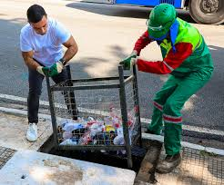

O público-alvo deste projeto abrange, principalmente, os órgãos públicos responsáveis pela infraestrutura urbana, como prefeituras, secretarias de obras e serviços públicos, departamentos de saneamento e empresas terceirizadas de limpeza urbana. Essas instituições são diretamente impactadas pelos problemas causados por bueiros entupidos e têm a responsabilidade de implementar soluções que reduzam alagamentos e melhorem a eficiência do sistema de drenagem pluvial. Além disso, o projeto também é voltado para a população urbana em geral, que sofre com os transtornos provocados pelas enchentes, como perdas materiais, dificuldades de locomoção e exposição a riscos sanitários. Ao promover uma solução que reduz esses danos e melhora a qualidade de vida nas cidades, o projeto beneficia moradores de áreas com histórico de alagamentos, comerciantes, motoristas, pedestres e demais cidadãos que utilizam o espaço público.
Outro grupo que pode se beneficiar diretamente da proposta são os gestores de políticas públicas e planejadores urbanos, que poderão usar os dados gerados pelos sensores para mapear os pontos críticos da cidade, planejar ações de limpeza mais eficientes e propor estratégias de educação ambiental baseadas em informações concretas. Portanto, o projeto visa atender tanto as entidades governamentais que executam e fiscalizam serviços urbanos, quanto a sociedade civil que vivencia os impactos diretos do problema, promovendo uma solução acessível, sustentável e baseada em dados para a construção de cidades mais inteligentes e resilientes.